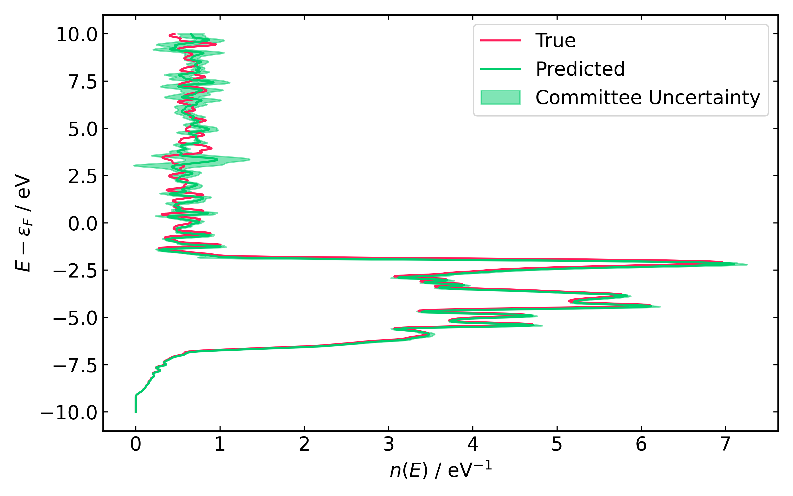

Tutorial
This tutorial outlines how to predict the density of states (DOS) of Au(HCP) together with committee uncertainty. The tutorial should only be run after installing the required Julia and Python packages as outlined in the Installation instructions.
The tutorial only includes the inference stage because training the models would require significant HPC resources. The trained Hamiltonian and overlap models are provided in the Models directory.
Matrix Inference
| Estimated Time |
|---|
| ~15 mins |
This section outlines how to predict the real-space Hamiltonian and overlap matrices of Au(HCP) using the provided models.
Once ML_Hamiltonians_Gold data has been cloned from GitHub, one should be able to find files called predict_matrices.jl and predict_matrices.sh. Both scripts contain some variables that should be changed:
| Variable name | Description | Location | Needs to be Changed |
|---|---|---|---|
ACEH_DIR | Directory path where ACEhamiltonians was installed. | .sh | YES |
JULIA_EXEC | Julia executable name. | .sh | NO |
N_PROCS | Number of processes used in the calculation. | .sh | NO |
ML_Hamiltonians_Gold_path | Path to the cloned ML_Hamiltonians_Gold repository. | .jl | NO |
committee_size | Number of processes used in the calculation. | .jl | NO |
Once the variables have been adjusted accordingly, the inference can be started by running the shell script as follows:
source predict_matrices.shMake sure the appropriate version of Julia is loaded from the SCRTP system before running this script. Julia should be loaded from the module system in the same way as in the Installation.
The script should start running in the background, generating a logger file nohup.out, and an HDF5 database file Au_hcp_committee.h5 which contains the predicted data. The script should take about ~15 minutes to finish (with N_PROCS=8).
Post-Processing
| Estimated Time |
|---|
| ~10 mins |
Once the matrix inference has been completed successfully, the predicted matrices can be used to obtain the electronic Density of States (DOS) for Au(HCP) with a committee uncertainty. The cloned repository should contain a Python file postprocess_data.py, which also has a ML_Hamiltonians_Gold_path variable as in the matrix inference stage, and it might have to be adjusted accordingly. The script can be run as follows:
python postprocess_data.pyMake sure the hamutils package is available in your Python environment. Before running the script above, one should activate the Python environment with hamutils as in the Installation.
The script should take about 10 minutes to finish, after which a file called Au_hcp_DOS.pdf should be visible in the cloned repository. The expected result is shown in the figure below.
